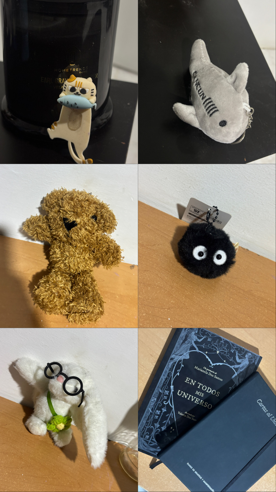

Capítulo I
Donde todo
era posible.
“Antes de aprender lo complicado que podía ser el mundo, Juli solo quería descubrirlo.”
La pequeña exploradora
Una niña libre,
curiosa y amada.
Los primeros años
Juli nació en una familia que la quiso desde el primer día. Sus papás cuentan que fue una niña profundamente curiosa: no le bastaba mirar las cosas, necesitaba entenderlas.
Los juguetes, la tecnología, los animales y cualquier objeto que apareciera cerca podían convertirse en una pregunta. A veces desarmaba algo solo para descubrir qué había dentro. Y aunque no siempre podía armarlo de nuevo, papá aparecía para ayudarla.

Todo podía ser un descubrimiento.
Su hogar
Su familia siempre fue su lugar favorito.
No porque hicieran cosas extraordinarias, sino porque hacían extraordinarios los momentos sencillos.
Preparar sándwiches antes de salir. Bailar en la sala. Caminar por el centro para ver los fuegos artificiales. Ir al bosque. Reír durante la comida.
Había felicidad en esas pequeñas costumbres. Y sin darse cuenta, ahí empezó a construir la forma en la que aprendería a amar toda su vida.
o una tarde en familiaEspacio para fotografía de infancia
La naturaleza
Juli no veía el mundo con miedo. Lo veía con curiosidad. Buscaba catarinas, hormigas, grillos y cochinitos de humedad; hasta los alacranes despertaban preguntas sobre cómo era el mundo.
Cada paseo era una aventura. Cada piedra podía esconder algo nuevo.
La magia estaba en mirar un poco más cerca.
Las personas que construyeron su infancia
Sus primeros compañeros de vida.
Ale fue la primera persona a quien quiso parecerse. Con ella aprendió muchas cosas que para un niño parecen enormes.
Andrés, en cambio, le enseñó otra forma de crecer: con él descubrió que la imaginación podía convertir cualquier tarde aburrida en una aventura inolvidable.
Ellos fueron sus primeros compañeros de vida.
y las personas que construyeron su infanciaEspacio para fotografía de infancia

Mamá y papá
Había dos personas que ocupaban un lugar imposible de reemplazar: mamá y papá.
Mamá era ese lugar donde todo volvía a sentirse bien. Papá era quien convertía cualquier juego en una historia. Después de correr durante horas, todavía encontraba tiempo para hacerle pequeños masajes antes de dormir.
Son recuerdos muy sencillos, pero son justamente esos recuerdos los que siguen viviendo en Juli muchos años después.
y un lugar seguroEspacio para fotografía de infancia
Y quizá, sin saberlo, la niña que perseguía burbujas en un jardín ya estaba construyendo a la mujer que un día seguiría haciendo preguntas. Solo que ahora las preguntas serían distintas.
Una página que siempre vuelve.Capítulo II
Cuando el mundo
empezó a cambiar.
Cambiar también es crecer
La primaria trajo nuevos salones, despedidas de amigas y cambios de casa. Juli aprendió que llevarse el hogar en el corazón podía hacer que cualquier lugar se sintiera un poco más suyo.
Desde pequeña ayudaba a su familia, aprendía a cocinar y vendía comida con su tía. Cada cosa nueva le enseñaba que podía aportar algo importante.
Guadalajara, Morelia, y los lugares que hicieron camino.
Ir y volver fue parte de su historia. No fue una despedida triste: fue la forma en que Juli entendió que crecer también significa abrirse a lo nuevo sin dejar de amar de dónde vienes.
Cada cambio dejó una semilla.
o una nueva casaEspacio para fotografía
Capítulo III
Descubriendo
quién era.

La identidad
La secundaria y la preparatoria en línea durante COVID fueron tiempos para escuchar más de cerca su propia voz. Entre la música de Billie Eilish, la cocina y la tecnología, Juli empezó a notar las cosas que encendían su curiosidad.
Aprendió programación, se hizo más independiente y comenzó a conocerse con honestidad: sus gustos, su orientación, sus preguntas y la persona que quería ser.
un código, un comienzoEspacio para fotografía
Conocerse también es darse permiso de cambiar.
Capítulo IV
Encontrando
su camino.
Aprender haciendo
El primer trabajo en Bubbles, las responsabilidades en Don Aquiles y la universidad fueron lugares donde Juli descubrió que podía guiar, aprender rápido y hacer que otras personas se sintieran capaces.
Estudiar Tecnologías de la Información le dio un lenguaje para la curiosidad que había tenido desde niña.

En Starbucks encontró el café, la paciencia de enseñar a otros y una nueva forma de crecer como líder.
que valga la pena recordarEspacio para fotografía
Capítulo V
Las pequeñas cosas
que hacen a Juli.
Mimi, los osos y los actos de servicio.
Billie Eilish, escribir y la música que acompaña.
Naturaleza, senderismo, sushi y té helado.
Tecnología, gorras, café y la curiosidad de siempre.

No son solo gustos. Son pequeñas ventanas hacia la forma en que Juli cuida, observa, crea y encuentra belleza en los detalles cotidianos.
Toda una vida cabe en lo pequeño.
o algo muy JuliEspacio para fotografía
Capítulo VI
Cuando apareció
alguien especial.
Un encuentro tranquilo
Cuando conoció a Jimena, Juli ya estaba construyendo una mejor versión de sí misma. Lo suyo no llegó a cambiar quién era, sino a acompañar lo que ya estaba floreciendo.
Entre tranquilidad, respeto y admiración, aprendieron juntas. Han ido construyendo una vida que se siente más consciente, más amable y más suya.
Crecer también puede ser hacerlo juntas.
compartidaEspacio para fotografía
Capítulo VII
La historia
continúa.
Juli sigue cambiando, aprendiendo, imaginando y cuidando de las personas que ama. No hay una última página cuando una vida todavía está llena de lugares por descubrir.
Y lo más bonito es que aún hay mucho por contar.